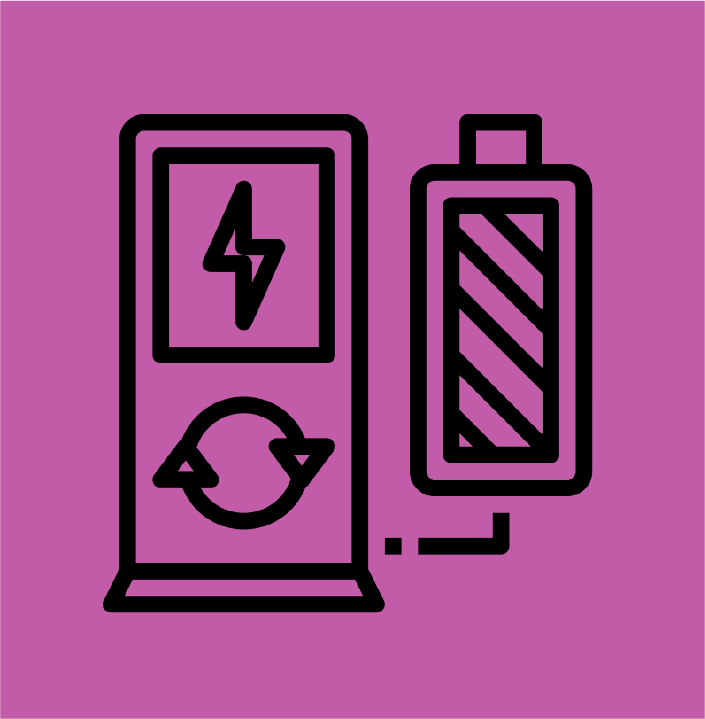

Technologies
Click the icons to choose the implementation pathways

Metrics
Filter the metrics to explore the different scenarios
Technology Schematic
Layout of technologies implemented

Click the icons to choose the implementation pathways
Filter the metrics to explore the different scenarios
Layout of technologies implemented

Welcome to the Decarbonization Pathways Dashboard! This dashboard outlines technologies to help MIT meet it's decarbonization goals.